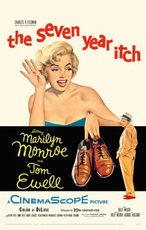

The Seven Year Itch
Starring: Marilyn Monroe, Tom Ewell, Evelyn Keyes
Director: Billy Wilder
Writer: Billy Wilder, George Axelrod
Producer: Billy Wilder, Charles K. Feldman
The Seven Year Itch is a 1955 American romantic comedy film directed by Billy Wilder, who co-wrote the screenplay with George Axelrod. Based on Axelrod's 1952 play, the film stars Marilyn Monroe and Tom Ewell, with the latter reprising his stage role.
Watch Online: YouTube
Trivia
- Won the Golden Globe Award for Best Actor – Motion Picture Musical or Comedy.
- Based on The Seven Year Itch (play written by George Axelrod).
- The characters of Elaine (Dolores Rosedale), Marie, and the inner voices of Sherman and The Girl were dropped from the play; the characters of the Plumber, Miss Finch (Carolyn Jones), the Waitress (Doro Merande), and Kruhulik the janitor (Robert Strauss) were added.
- Many lines and scenes from the play were cut or re-written because they were deemed indecent by the Hays office.
- Axelrod and Wilder complained that the film was being made under straitjacketed conditions.
Filming Locations
- New York City
- The footage of Monroe's dress billowing over a subway grate was shot at two locations: first on location outside the Trans-Lux 52nd Street Theater (then located at 586 Lexington Avenue in Manhattan), then on a sound stage.
Previous Showings
7 Runs • 4 Festivals
Original Billings: 2 runs (July 1, 1955 - November 5, 1958)
Original Run: July 1, 1955 (Friday - Thursday)
All runs on record (7):
- July 1, 1955 (Friday - Thursday)Marilyn Monroe, Tom Ewell
- November 5, 1958 (Wednesday - Saturday)Marilyn Monroe, Tom Ewell
- March 18 - 22, 1994w/ Witness for the Prosecution
- August 9 - 10, 2001Summer 2001w/ Bus Stop
- June 20 - 25, 2002Summer 2002: Billy Wilder Remembered and Cary Grant, Part 3w/ One, Two, Three
- May 18 - 19, 2013The 1950sw/ There's No Business Like Show Business
- June 17 - 21, 2026Summer 2026 including the Films of Marilyn Monroew/ Some Like It Hot